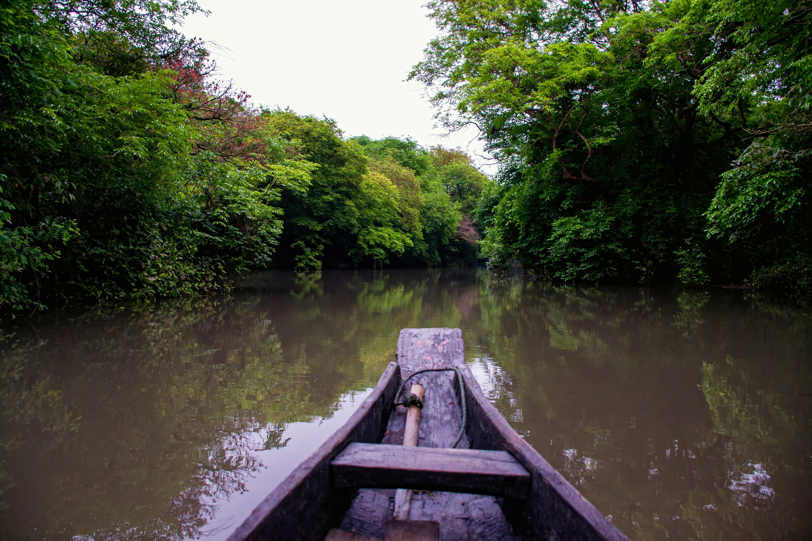

Surviving in a swamp involves navigating challenging conditions such as muddy, waterlogged terrain and dense vegetation. Building a shelter above water is crucial, using tree branches and leaves to stay dry and avoid insects. Purify swamp water by boiling, filtering, or using purification tablets to prevent illness. For food, look for fish, frogs, and edible plants like cattails, while avoiding anything you can't positively identify. Fire can be difficult to start due to the damp environment, so collect and dry wood when possible, and use fire starters. Protect yourself from mosquitoes and other insects with clothing and repellent, and be cautious of wildlife like snakes and alligators. Finally, manage health risks by keeping wounds clean and avoiding stagnant water where mosquitoes breed.
Hazards of The Swamp
- Quicksand: Muddy areas can trap you. Move slowly and use logs to avoid sinking.
- Waterborne Diseases:
Swamp water can carry harmful bacteria. Always purify it before drinking. - Insects:
Mosquitoes and ticks can spread diseases. Use repellent and protective clothing. - Wildlife:
Be cautious of alligators, snakes, and other dangerous animals. Stay alert and keep a safe distance. - Drowning:
Deep, murky water poses drowning risks. Avoid deep water and wear a life jacket if boating. - Hypothermia:
Wet and cold conditions can cause hypothermia. Stay dry and warm with proper clothing. - Infection from Wounds:
Swamp water can infect cuts and scrapes. Clean and cover wounds properly. - Toxic Plants:
Some plants can be toxic or irritating. Avoid touching unknown plants. - Navigational Hazards:
Watch out for hidden obstacles and dense vegetation. Move carefully and use GPS. - Extreme Weather:
Swamps can experience sudden storms. Be prepared for weather changes and have a shelter plan.